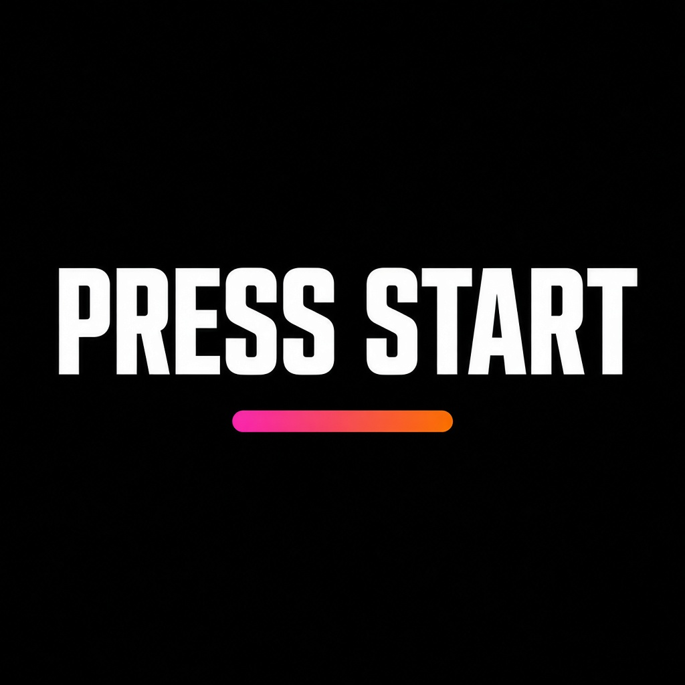

PRESS START
Your games. Full speed. On iPhone.
A native shelf for Game Boy, GBA, NES, SNES, and Mega Drive. Import the cartridges you own. Saves stay on your phone. Built for GameSir.
Get on the App StoreThe Safari player is retired. Build the native app from this repository’s PressStart folder. Source is AGPL-3 when Delta cores are linked. Privacy · Store prep